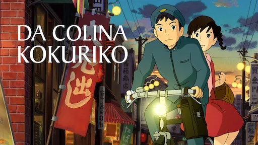
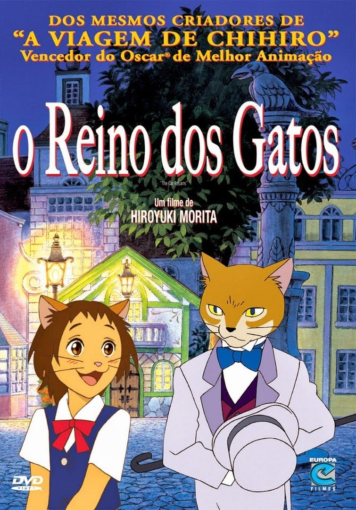
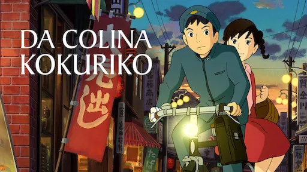
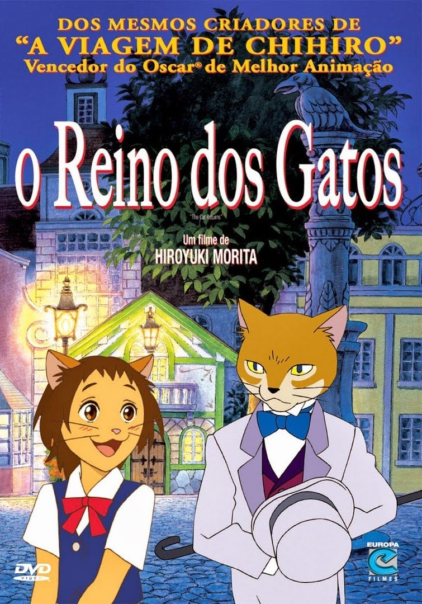

Eu fiz nas minhas férias:
Eu não fiz muitas coisas, o de sempre, dormi tarde, comi besteira...
Porém eu recebi visita da minha vó e da minha prima, tive q dividir o colchão com ela,
e como a boa caipira q ela é,
saímos para andar de ônibus, "turistar".
Lugares que eu fui em ordem:
- No Park Shopping Boulevard

- No Centro e na Feirinha de Inverno
- Shopping Estação

Filmes do Studio Ghibli que eu assisti nas férias
- Sussurros do Coração

- Da Colina Kokuriko

- O Reino dos Gatos

Porém eu recebi visita da minha vó e da minha prima, tive q dividir o colchão com ela,
e como a boa caipira q ela é,
saímos para andar de ônibus, "turistar".
Lugares que eu fui em ordem:
- No Park Shopping Boulevard
- No Centro e na Feirinha de Inverno
- Shopping Estação
- Sussurros do Coração
- Da Colina Kokuriko
 - O Reino dos Gatos
